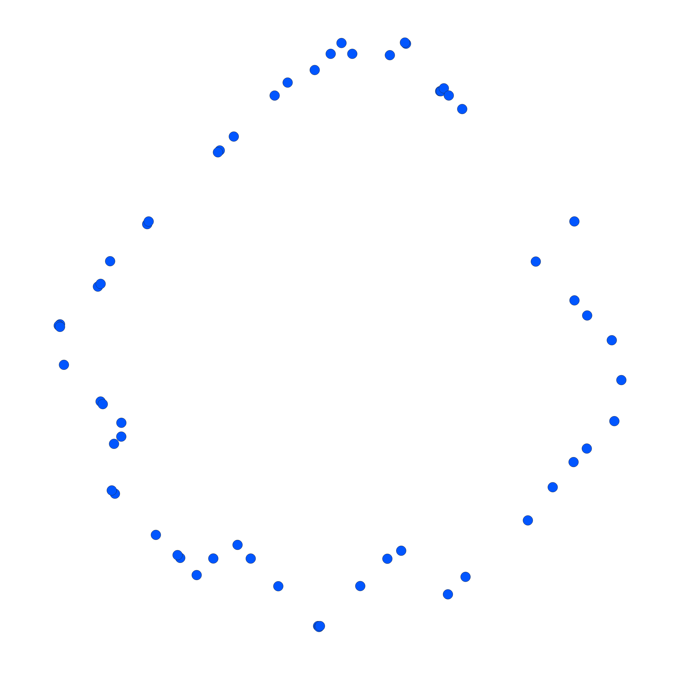
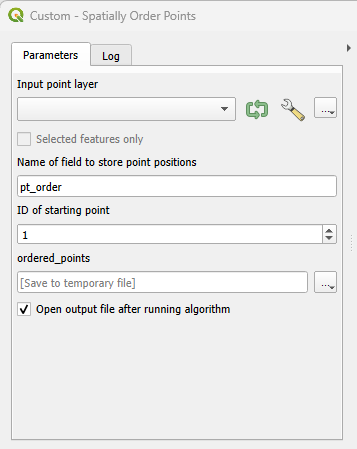

Spatially Order Points
Introduction
For a personal project in QGIS I was looking for a way to convert a collection of points into a polygon. After manually digitizing polygons from points a few times I got the idea of automating the process using python. Although I figured the time it took to learn PyQGIS and create a processing tool would outweigh any time saved by actually using the finished algorithm, it seemed like a good learning experience nonetheless. As such, I decided to try my hand at creating my own algorithm.
The closest tool to what I was looking for was concave hull which essentially wraps a collection of points with a polygon. However, I was hoping to find something with a bit more precision.
The algorithm i designed essentially assigns each point a position in a list based on proximity to adjacent points. For example, if point 1 is selected as the starting point, point 1 is closest to point 3, point 3 is closest to point 2, and point 2 is closest to point 4, then the order would be 1, 3, 2, 4 (assuming features are sorted by ID and in ascending order: 1, 2, 3, 4). The resulting layer can then be used with the Point to path tool to create a line that connects each point to the two nearest points.
Link to full script: spatiallyorderpoints.py
Link to example of its use: Walking Map
Disclaimer: the script is a work in progress and there may be bugs I haven't worked out yet.
Examples
An example of a point dataset to be converted into a polygon:

The results of concave hull:
Using the Points to path tool on an unordered dataset (i.e., dataset that hasn't been
run through my algorithm. The points are connected in sequence of feature ID which
appears
random):
Using the Points to path tool on an ordered dataset (i.e., dataset that has been run
through my algorithm):
The Algorithm
When the script is ran, the user is prompted to select the inputs and outputs which consist of a point layer, name of the new field the point order will be stored in, and the ID of the starting point (i.e., which point will be considered the first):
Much of the code consists of PyQGIS items that are necessary for the tool to function in QGIS. As such, we will skip ahead and take a look at the parts of the code that actually processes the data. Firstly, variables are created for the inputs and checked for errors, the input feature is copied into the output feature, and the new field to store the order is created.
def processAlgorithm(self, parameters, context, feedback):
input_feature = self.parameterAsVectorLayer(parameters, 'INPUT', context)
if input_feature.geometryType() != 0:
raise QgsProcessingException(
self.invalidSourceError(parameters, input_feature)
)
starting_id = self.parameterAsInt(parameters, 'STARTING_ID', context)
field_name = self.parameterAsString(parameters, 'FIELD_NAME', context)
output_path = self.parameterAsOutputLayer(parameters, 'OUTPUT', context)
if len(field_name) > 10:
feedback.pushWarning("WARNING: field name > 10 characters")
# Copy input feature
output_layer = input_feature.clone()
# Check if field_name exists, if not, add it
if output_layer.fields().lookupField(field_name) == -1:
feedback.pushInfo('Creating new field...')
output_layer.startEditing()
output_layer.dataProvider().addAttributes([QgsField(field_name, QVariant.Int)])
output_layer.commitChanges()
feedback.pushInfo('Field created')
else:
feedback.pushInfo('Field already exists')
# Create variables
field_index = output_layer.fields().lookupField(field_name)
id_list = input_feature.allFeatureIds()
id_sort = sorted(id_list)
if not starting_id in id_list:
feedback.reportError("ERROR: ID of starting point not found", True)
return {}
closest_id = starting_id
feedback.pushInfo('Number of features: ' + str(len(id_list)))
if len(id_list) <= 1:
feedback.reportError("ERROR: need at least 2 features", True)
return {}
count = 1
ordered_result = []
Next is the main part of the code that calculates the order:
- The main for loop only needs to iterate the same number of times as there are features in the dataset. The iterator variable id isn't needed.
- The geometry of the starting point is compared to the geometry of every other point in the feature using a nested for loop. In subsequent iterations, the closest point to the last point is used as geom1.
- The row is sorted in ascending order so that the shortest distances come first.
- The second element in the row is set as the distance to the nearest point because the first element will contain the distance to itself (0.0).
- A while loop ensures that the next closest point is not any point that has already bean logged and it handles special conditions when the current point is the first or last point in the feature.
- closest_id is set to the ID of the nearest point for the next iteration.
- ordered_result stores point IDs and forms the desired sequence.
- Finally, there is progress feedback and the option to cancel the script.
# Find the nearest point to the starting point, then use that nearest point as the starting point for the next iteration and repeat until every point has been logged
for id in id_sort:
j = 1
row = []
geom1 = input_feature.getGeometry(closest_id)
for id2 in input_feature.getFeatures(): # I am assuming the feature iterator is ordered by feature id, it seems like it is
geom2 = id2.geometry()
distance = geom1.distance(geom2)
row.append(distance)
if feedback.isCanceled():
break
return {}
sorted_row = sorted(row)
smallest = sorted_row[1] # select the second item because the first will always be itself
# While nearest point has already been logged or nearest point is the first point and current point is not the last point
while closest_id in ordered_result or (len(ordered_result) != 0 and closest_id == starting_id and (len(ordered_result) < len(id_list) - 1)):
smallest = sorted_row[j]
closest_id = id_sort[row.index(smallest)]
j += 1
closest_id = id_sort[row.index(smallest)]
ordered_result.append(closest_id)
progress = count / (len(id_sort)) * 100
feedback.setProgress(progress)
count += 1
if feedback.isCanceled():
break
return {}
The feature iterator in the nested for loop seems to be ordered by feature id. If there are circumstances that I have not tested for where this is not the case, then my script wouldn't work. At the moment this is the only solution I am aware of. Before, I used getGeometry() within a loop to retrieve all the geometries for geom2 which provided a more certain method. But, this method was extremely inefficient and cause the script to potentially take several hours to complete with large datasets. The feature iterator is far more efficient and lowers the time it takes to run the script to up to a few minutes.
The last block of code ensures that the value 1 is associated with starting_id, updates the newly created field to store the point order values, checks for errors, and returns the output feature.
# Shift the list over because the first point in ordered_result is never the starting_id
while ordered_result.index(starting_id) != 0:
ordered_result = [ordered_result[-1]] + ordered_result[:-1] # shift list to the right by one
# Update attributes with point positions
output_layer.startEditing()
for id in id_sort:
output_layer.changeAttributeValue(id, field_index, ordered_result.index(id))
if feedback.isCanceled():
break
return {}
output_layer.commitChanges()
error = QgsVectorLayerExporter.exportLayer(output_layer, output_path, "ogr", input_feature.crs(), False)
if error[0] != QgsVectorLayerExporter.NoError:
raise QgsProcessingException(f"ERROR: Failed to export layer: {error[1]}")
if feedback.isCanceled():
return {}
return {'OUTPUT': output_path}